| 日付 | 2012年8月4日（土） - 2012年8月7日（火） | ||||
|---|---|---|---|---|---|
| 山域 | 北アルプス、妙高周辺 | ||||
| メンバー | 家族（妻、長女・1歳） | ||||
| 山行形態 | 子連れ3泊4日ホテル泊 | ||||
| アクセス | 車 | ||||
| ルート |
|
今年の夏休みは、家族で初めての山小屋泊で北アルプスに行こうと考えていた。
場所はいろいろ考えたが、唐松岳～五竜岳の1泊2日山行とし、
前後に1日ずつ移動日を入れて3泊4日の旅行を計画。
ところが天気予報は芳しくなく、子連れで北アルプスの稜線を歩くのは
どう考えてもリスクが高そうだ。
仕方なく、唐松小屋の個室を泣く泣くキャンセル。
登山日を1日ずらして天候の安定してそうな土日に登ることも考えたが、
直前に週末の山小屋個室が取れる訳もなく、万事休す。
結局、どこに行くかはそのときの体調と天候を見て決めることにする。
1日目
土曜日は快晴。中央高速道路からは美しい山々の風景が広がる。
八ヶ岳PAで小休止。背景はもちろん八ヶ岳だ。
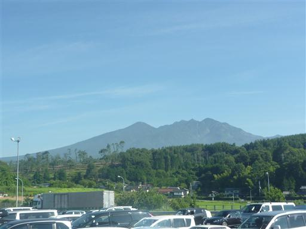
左手には南アルプスの山々が見えている。
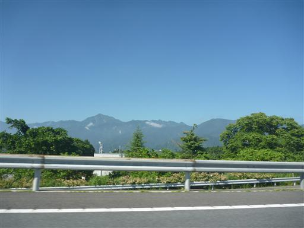
高速道路を降りると北アルプスが見えてくる。
左から爺ヶ岳、鹿島槍ヶ岳、五竜岳だ。
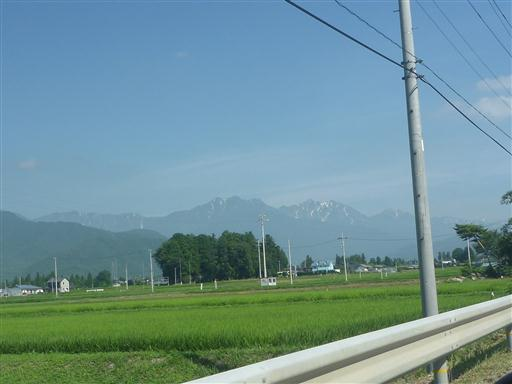
さらに北上すると見えてくるのが白馬三山。素晴らしい天気で期待が高まる。
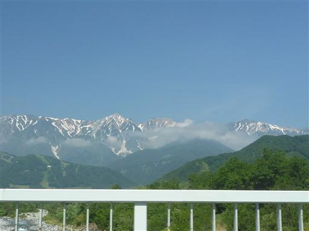
初日は栂池自然園を散策する予定。
駐車場にはすでに多くの車が停まっていてほぼ満車だ。
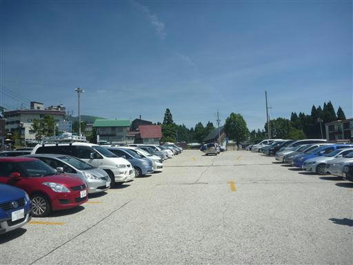
ゴンドラリフトイブに乗って栂池平まで行く。
ガチャンガチャンという大きな音が鳴っていて子供が泣き出してしまう。
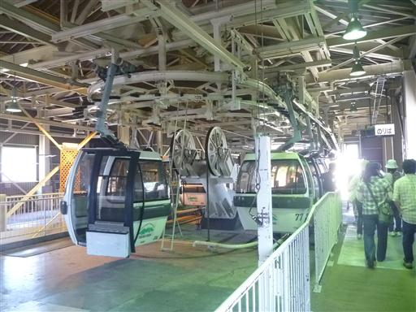
子供をなだめながら無事乗車。
美しい景色を見ていたら（？）次第に落ち着いてきたようだ。
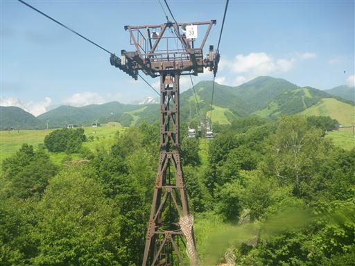
ゴンドラを乗り換えて栂池平に到着。ここの標高はすでに1850mだ。
有料の栂池自然園に入園する。
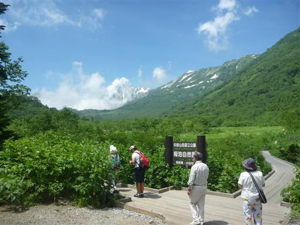
この辺りは高層湿原が広がっていて、散策用の木道が設置されている。
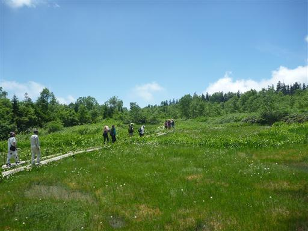
背後に聳えているのは白馬岳。非常に立派な姿だ。
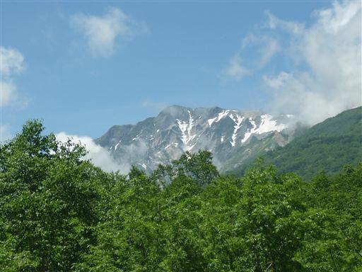
風穴。穴の中に雪があって冷気が出ている。
今日は非常に暑いので、穴の前は涼しくて気持ちが良い。
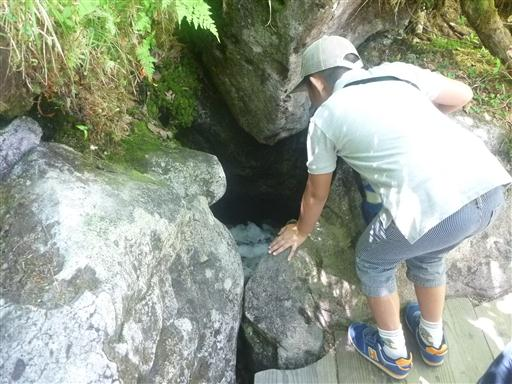
キヌガサソウの花がポツリポツリと咲いている。
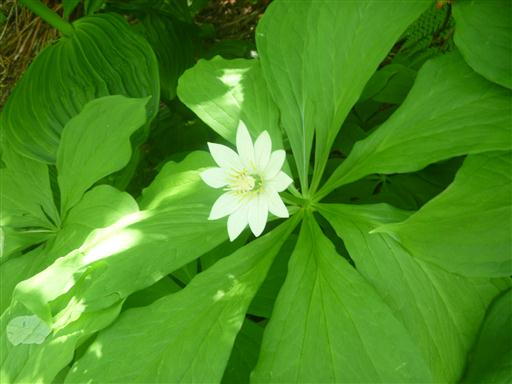
湿原を抜けると木道は終わって登山道のような道になる。
観光最盛期のシーズンなので人通りは多い。
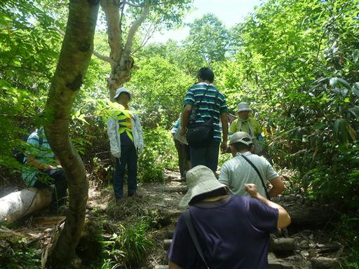
坂を登ると展望が大きく開ける。
左下に見える湿原からここまで登って来た。
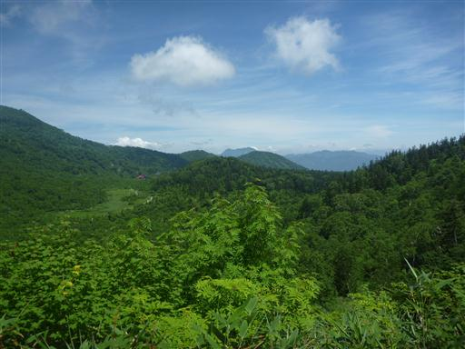
遠く戸隠連峰の山々が見えている。左が高妻山、右が西岳だ。
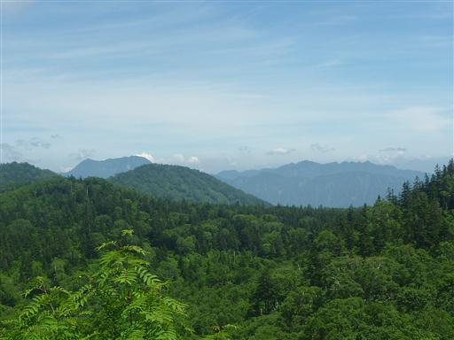
この辺りにもう一つ湿原が広がっている。
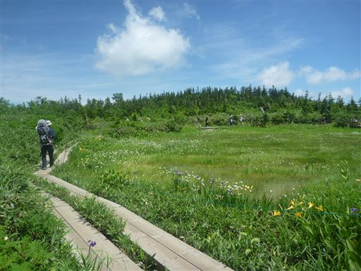
辺りには池塘が点在していて非常に美しい場所だ。
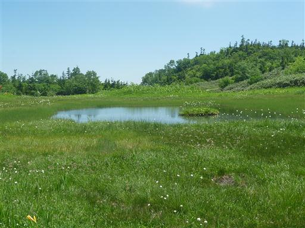
イブキトラノオが風に揺れている。
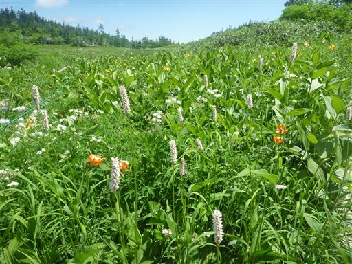
ニッコウキスゲとワタスゲ。ワタスゲは湿原一面に広がっていて見ごたえがある。
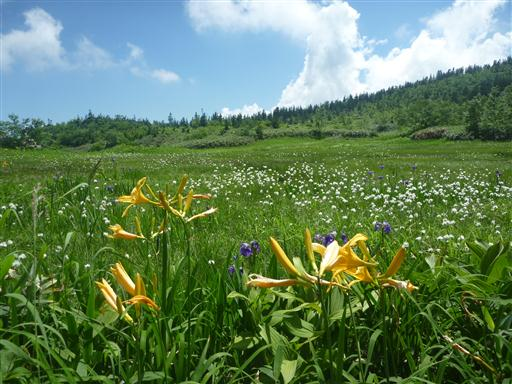
背後には白馬の山並が見えるはずなのだが、残念ながら雲に隠されてしまった。
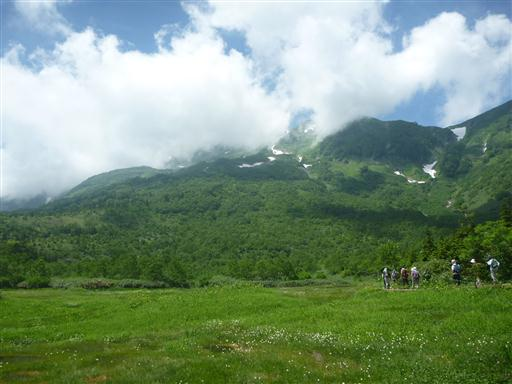
さらに展望台を目指して急な階段を登っていく。
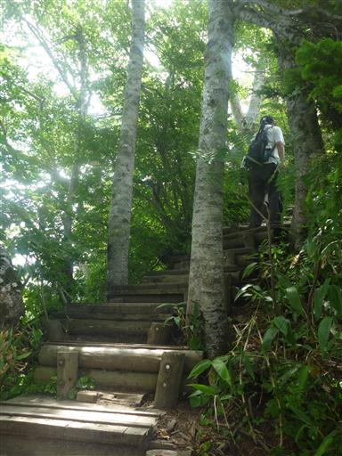
園内最高地点に到着。標高は2020m。
遠く下界の景色を見渡す。
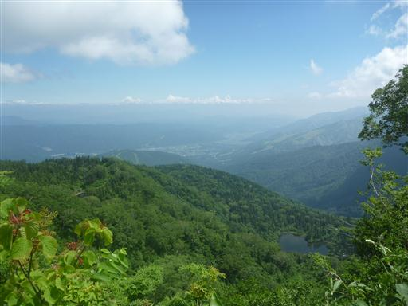
目の前には白馬大雪渓が見えているが、上の方は完全に雲に覆われている。
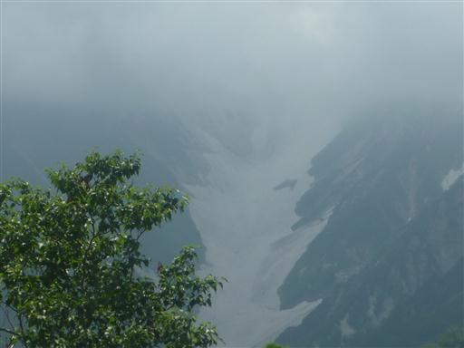
お隣の展望湿原に移動。こちらは観光客が大勢集まっている。
我々もここに腰を下ろして休憩することにする。
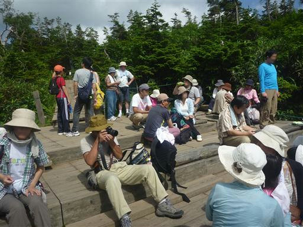
目の前に広がる湿原にはタテヤマリンドウが咲いている。
イワイチョウの葉らしきものも見えるが花期は終わってしまったようだ。
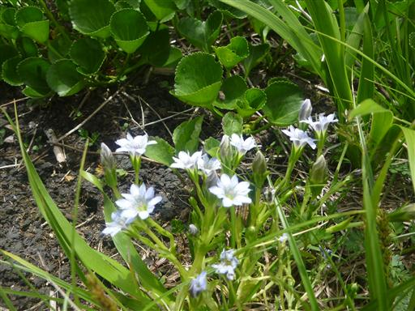
この自然園には周回コースがあるので、登りとは違う道を下って行く。
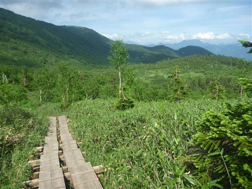
木道に蝶がとまっている。
この場所を離れようとしないが、甘い蜜でも出ているのだろうか？
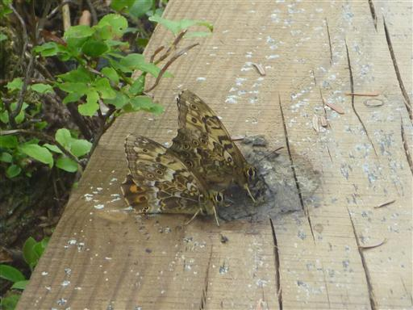
銀命水という水場に到着。冷たい水が流れている。
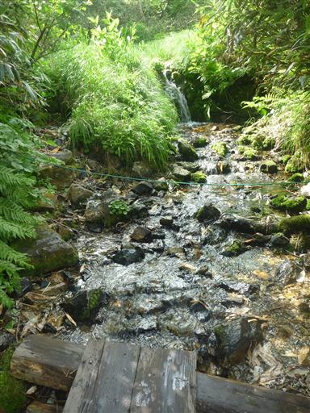
オオシラビソ。木のてっぺんだけに多くの実をつけている。
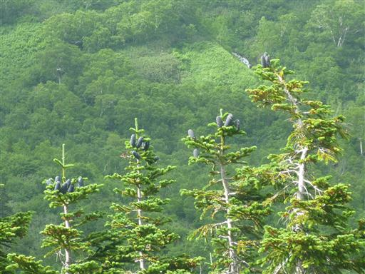
楠川を横切るところで河原に下りて少し遊ぶことにする。水は驚くほど冷たい。
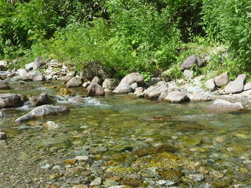
河原の石を拾っては川の中に投げ入れている。
水しぶきが上がるのが楽しいらしい。
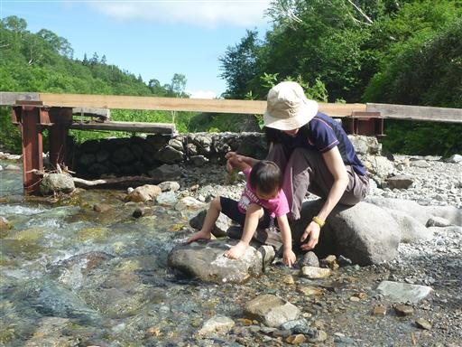
自然園入口付近はバリアフリー木道になっているため、
最後の方はキャリアから降ろして手をつないで歩く。
花に興味があるらしく、立ち止まっては指で突っついている。
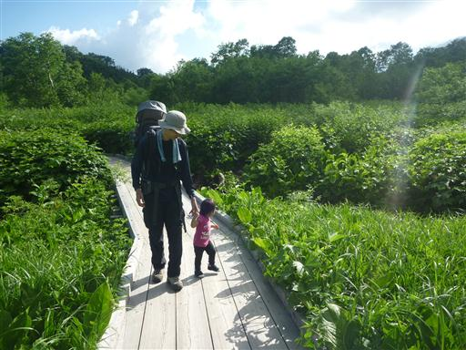
再びゴンドラリフトに乗って下山。
快適なリフトだが、リフト運賃往復一人3000円は少々高い。
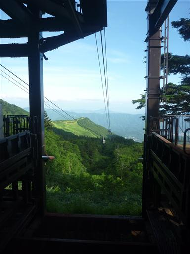
帰ってきたら駐車場の車はほとんどなくなっていた。
1泊2日で山に行っている人はほとんどいないようだ。
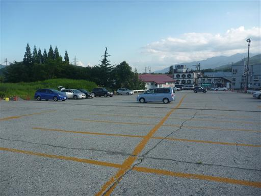
今日は北アルプス・八方尾根の麓にあるエアメイルという宿に宿泊する。
非常に食事の美味しい宿だった。
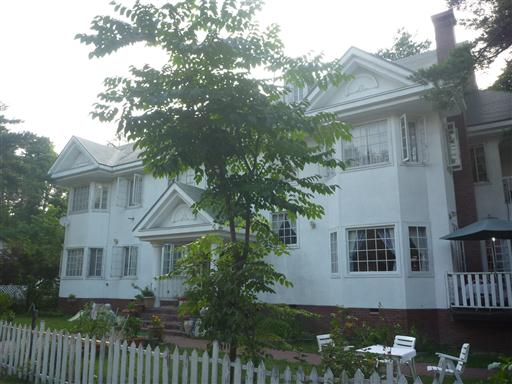